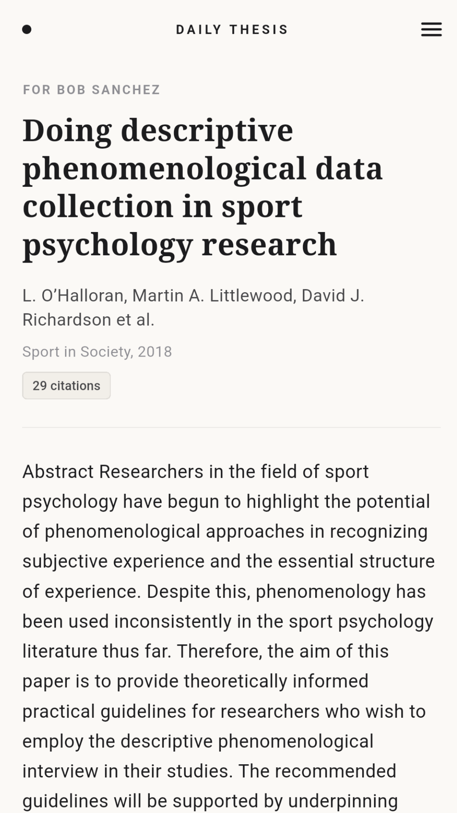
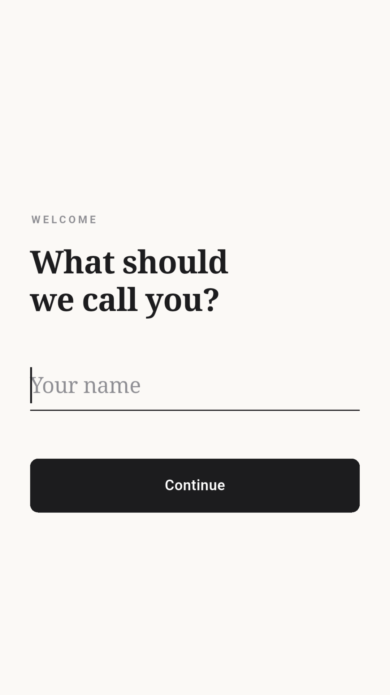
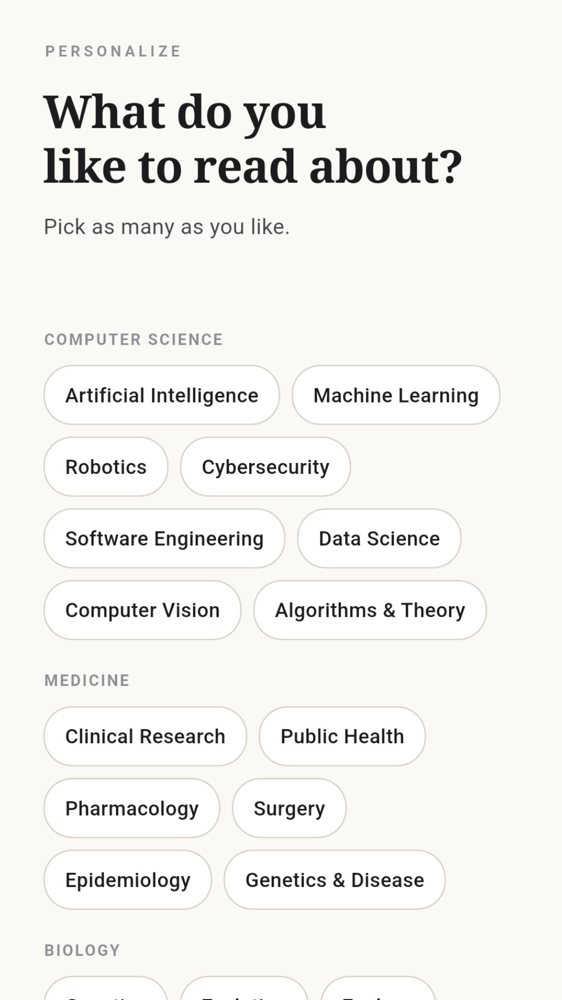
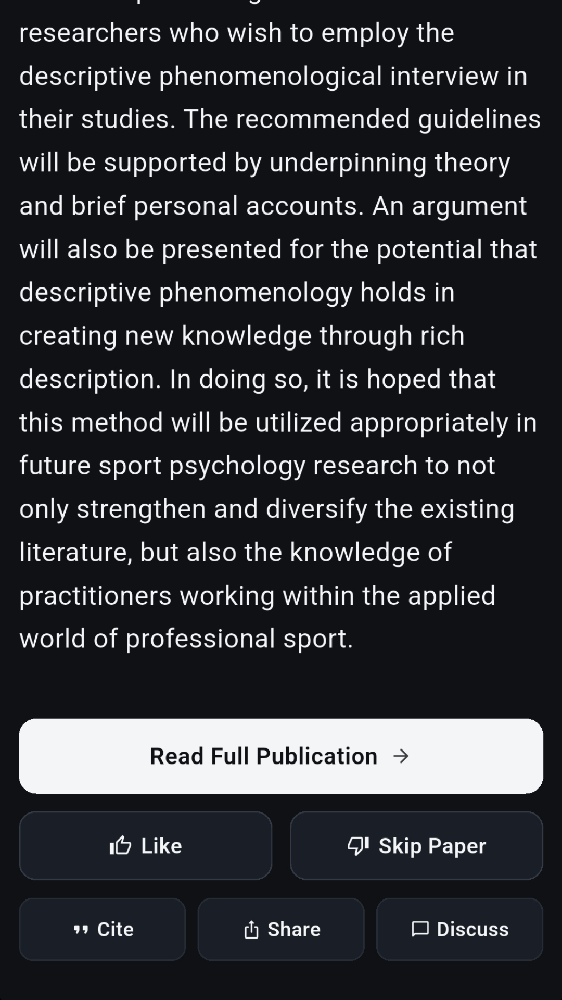
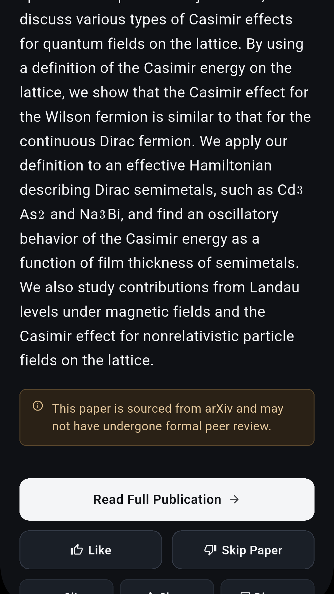
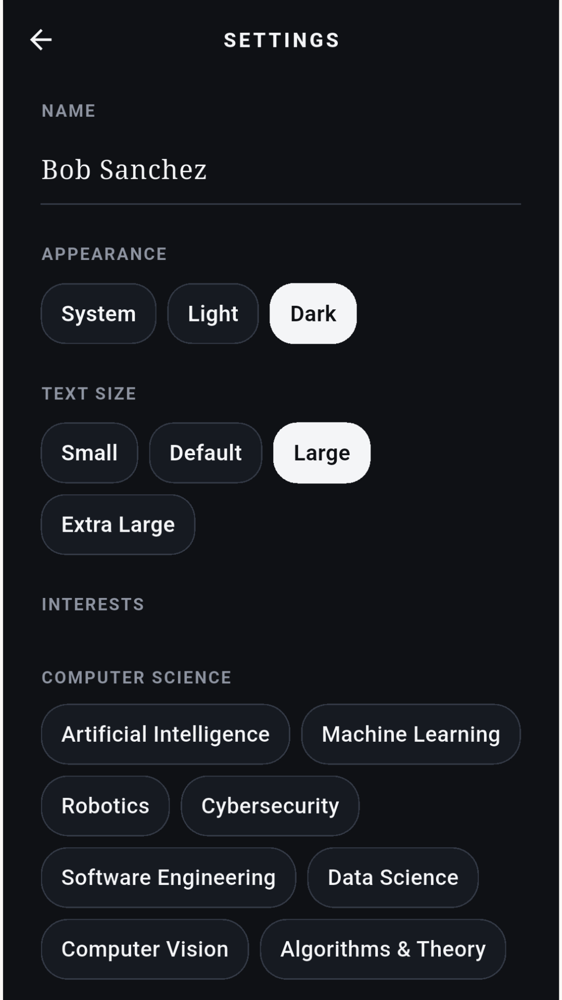
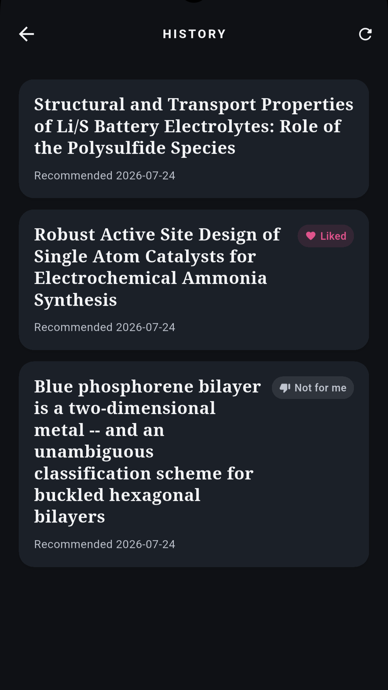

Discover, read, and cite the latest research in Computer Science, Medicine, and Biology. Tailored specifically to your interests.
Takes 2 minutes to join. Get early access before public launch, plus a direct line to shape features.

Get started in seconds. Choose from dozens of categories across Computer Science, Medicine, and Biology to create a personalized feed of research you actually want to read.


Enjoy clean paper summaries in both light and dark themes. Read full publications, skip irrelevant papers, generate instant citations, and discuss findings with colleagues. Our system will make sure you know if a paper was sourced from a pre-print website.


Customize your text sizing and appearance preferences whenever you want. Easily revisit past papers and recommendations with built-in reading history tracking.


Tap "Join as a Tester" and join the Google Group. Takes about a minute.
You'll be added as a tester in Play Console and can install the app directly from the store.
Read papers for 14 days and tell us what's broken, missing, or great. That's it.